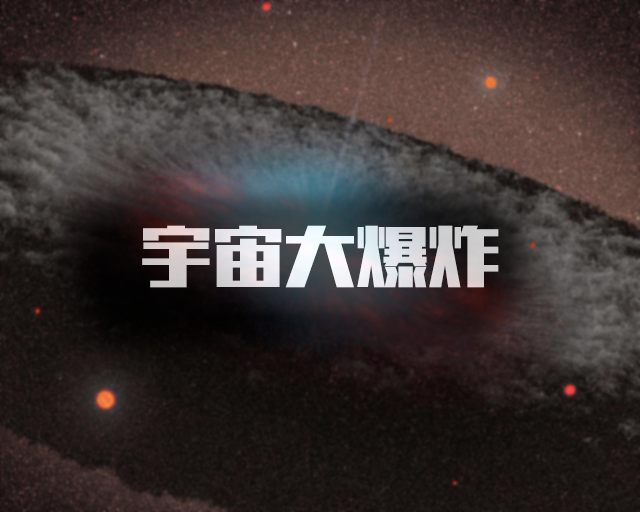
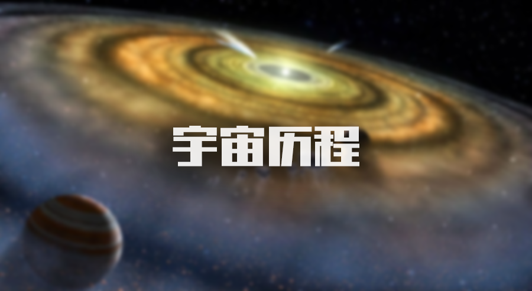
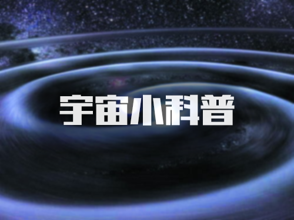

欣赏:视觉盛宴
- 
- 
- 

大爆炸年表
一.折叠粒子及物质形成过程
宇宙最开始，没有物质只有能量，大爆炸后物质由能量转换而来（质能转换E=mcc），当代粒子物理学告诉我们，在足够高的温度下（称为“阈温”），物质粒子可以由光子的碰撞产生出来。下面是宇宙物质进化的详细过程：
时标-10^-43秒 宇宙从量子背景出现。
时标-10^-35秒 同一场分解为强力、电弱力和万有引力。
时标-10^-5秒 10万亿开，质子和中子形成。
时标0.0001秒，温度达几十万亿开，大于强子和轻子的阈温，光子碰撞产生正反强子和正反轻子，同时其中也有湮灭成光子。在达到平衡状态时，粒子总数大致与光子总数相等，未经湮灭的强子破碎为“夸克”，此时夸克处于没有任何相护作用的“渐进自由状态”。宇宙中的粒子品种有：正反夸克，正反电子，正反中微子。最后，有十亿分之一的正粒子存留下来。
时标0.01秒温度1000亿开，小于强子阈温大于轻子阈温。光子产生强子的反应已经停止，强子不再破碎为夸克，质子中子各占一半，但由于正反质子正反中子不断湮灭，强子数量减少。中子与质子不断相互转化，到1.09秒时，温度100亿开，质子：中子=76：24。
时标13.82秒，温度小于30亿开，物质被创造的任务完成。中子衰变现象出现，衰变成质子加电子加反中微子。这时质子：中子=83：17。
时标3分46秒，温度9亿开，反粒子全部湮灭，光子：物质粒子=10亿：1，中子不再衰变，质子：中子=87：13（一直到现在）；这时出现了一个非常重要的演化：由2个质子和2个中子生成1个氦原子核，中子因受核力约束而保存下来。宇宙进入核合成时代。（如果没有氦核产生，中子将全部衰变，也没有以后其它的原子核）
时标30万—70万年，温度4000—3000开，能量和物质处于热平衡状态。开始出现稳定的氢氦原子核，宇宙进入复合时代。在后期宇宙逐步转变为以物质为主的时代。（光子随着温度的降低而可以自由穿行，即今天的3开宇宙背景辐射！）
时标4亿—5亿年，温度100开。物质粒子开始凝聚，引力逐渐增大，度过“黑暗时代”后，第一批恒星星系形成。
随着第一批恒星的形成，原子在恒星的内部发生了核聚变反应，进而出现了氦，碳、氧、镁，铁等元素原子核。核聚变是指由质量小的原子，主要是指氘或氚，在一定条件下（如超高温和高压），发生原子核互相聚合作用，生成新的质量更重的原子核，并伴随着巨大的能量释放的一种核反应形式。
（值得注意的是，不同质量的恒星能引发的核聚变程度不同，太阳主要为氢—氦聚变，重一点的会引发碳—氧—镁聚变，再重的会引发下一轮聚变。总的顺序简略依次为：氢，氦，碳，氧，镁，硅，铁。但无论恒星多重，最终的聚变结果只能是铁，恒星内部不能产生比铁更重的原子核！）
凡是元素周期表上有的（除人造元素外），都是在恒星大炼炉里形成的，铁以后的原子核，只能在超爆中产生。
二.基本假设
大爆炸理论的建立基于了两个基本假设：物理定律的普适性和宇宙学原理。宇宙学原理是指在大尺度上宇宙是均匀且各向同性的。
这些观点起初是作为先验的公理被引入的，但现今已有相关研究工作试图对它们进行验证。例如对第一个假设而言，已有实验证实在宇宙诞生以来的绝大多数时间内，精细结构常数的相对误差值不会超过10^-5。此外，通过对太阳系和双星系统的观测，广义相对论已经得到了非常精确的实验验证；而在更广阔的宇宙学尺度上，大爆炸理论在多个方面经验性取得的成功也是对广义相对论的有力支持。
假设从地球上看大尺度宇宙是各向同性的，宇宙学原理可以从一个更简单的哥白尼原理中导出。哥白尼原理是指不存在一个受偏好的（或者说特别的）观测者或观测位置。根据对微波背景辐射的观测，宇宙学原理已经被证实在10^-5的量级上成立，而宇宙在大尺度上观测到的均匀性则在10%的量级。
三.折叠FLRW规度
广义相对论采用度规来描述时空的几何属性，度规能够给出时空中任意两点之间的间隔。这些点可以是恒星、星系或其他天体，它们在时空中的位置可以用一个遍布整个时空的坐标卡或“网格”来说明。根据宇宙学原理，在大尺度上度规应当是均匀且各向同性的，唯一符合这一要求的度规叫做弗里德曼－勒梅特－罗伯逊－沃尔克度规（FLRW度规）。这一度规包含一个含时的尺度因子，它描述了宇宙的尺寸如何随着时间变化，这使得我们可以选择建立一个方便的坐标系即所谓共动坐标系。在这个坐标系中网格随着宇宙一起膨胀，从而仅由于宇宙膨胀而发生运动的天体将被固定在网格的特定位置上。虽然这些共动天体两者之间的坐标距离（共动距离）保持不变，它们彼此间实际的物理距离是正比于宇宙的尺度因子而膨胀的。
大爆炸的本质并不是物质的爆炸从而向外扩散至整个空旷的宇宙空间，而是每一处的空间本身随着时间的膨胀，从而两个共动天体之间的物理距离在不断增长。由于FLRW度规假设了宇宙中物质和能量的均匀分布，它只对宇宙在大尺度下的情形适用——对于像我们的星系这样局部的物质聚集情形，引力的束缚作用要远大于空间度规膨胀的影响，从而不能采用FLRW度规。
四.折叠视界
大爆炸时空的一个重要特点就是视界的存在：由于宇宙具有有限的年龄，并且光具有有限的速度，从而可能存在某些过去的事件无法通过光向我们传递信息。从这一分析可知，存在这样一个极限或称为过去视界，只有在这个极限距离以内的事件才有可能被观测到。另一方面，由于空间在不断膨胀，并且越遥远的物体退行速度越大，从而导致从我们这里发出的光有可能永远也无法到达那里。从这一分析可知，存在这样一个极限或称为未来视界，只有在这个极限距离以内的事件才有可能被我们所影响。以上两种视界的存在与否取决于描述我们宇宙的FLRW模型的具体形式：我们现有对极早期宇宙的认知意味着宇宙应当存在一个过去视界，不过在实验中我们的观测仍然被早期宇宙对电磁波的不透明性所限制，这导致我们在过去视界因空间膨胀而退行的情形下依然无法通过电磁波观测到更久远的事件。另一方面，假如宇宙的膨胀一直加速下去，宇宙也会存在一个未来视界。
基于上一自然段落所述，所以现今有多元宇宙之说。即多重宇宙和并行宇宙学说。本视界之外仍有另一或多重宇宙体系，我们通常所说的宇宙只是我们现在还没有“望到”“边际”的仍在膨胀之中的“本宇宙”（即以地球人观测极限为半径的范围内）而已。而不是其它的另一或多重宇宙。也就是说，这种“大爆炸”如果是在一个奇点上发生，那么，这种“大爆炸”是否是多重“爆炸”的某一“层次”，或是同时有“几个”“炸点”并存？正像有人怀疑现在的地球生物曾经发生过多次灭绝与复活一样。
这里也可以引入一个“宇宙盒”的概念来理解多元宇宙的概念，即“盒子”总比被“盒子”“盛放”的物质要大。即宇宙盒是用来盛放宇宙的盒子，总会比宇宙本身要大的。这就说明尽管宇宙无限大，但总大不过盛放它的盒子的。我们现在所说的宇宙只不过是宇宙盒中所盛放的其中的“这一个”“宇宙”而已。
“宇宙大爆炸”理论是建立在人类依据观测通过计算得到的数据基础上的。不能以人们的观测极限来判定宇宙的大小。“宇宙大爆炸”理论即推翻了“宇宙无限大”理论的同时也证明了“‘宇宙’的无限性”。只是此“‘宇宙’”非彼“宇宙”也。

宇宙大尺度结构
一.宇宙之网
星系巡天的结果显示我们的宇宙似乎显示一种"泡沫网状"结构。几乎所有的星系都分布在狭窄的"纤维带"上，而在它们的中间则是巨大的空洞，天文学上称为"巨洞"。这些巨洞的体积巨大，有些直径可达3亿光年，其中几乎空无一物。但是这样说并不正确，因为尽管我们看上去那里确实是什么也没有，但实际上这里充斥着暗物质。
结构的组织争议开始于恒星的层次，虽然多数的宇宙学家很少在天体物理学中研究这个尺度。恒星是星系内的组织，星系则组织成星系群、星系团和被巨大的空洞分隔的超星系团。在1989年之前，一般的假设是均巧的星系团是存在的最大结构，并且在宇宙的各个方向上的分布或多或少都是均匀的。然而，建立在红移观测的资料上，Margaret Geller和John Huchra在1989年发现了长城，由星系组成的长5亿光年、宽2亿光年、厚1500万光年的结构。这个结构的存在跳脱了长久以来的认知，因为它需要星系在三个空间维度中的位置，就必需加入来自红移的星系距离资料。在2003年，另一个大尺度结构 - 史隆长城 - 也被发现了。但是，在技术上并不认为这是一种结构，因为彼此在重力上并无关联，只是在测量的距离上都出现在那儿。在太空中最大的空洞之一是摩羯座的空洞，估计他的直径是2.3亿光年。
在2007年8月，一个可能的超级空洞在波江座被发现，他与WMAP冷斑点 -在微波的天空中寒冷的一个区域- 一致，但在现行受到偏爱的宇宙论模型下是极度不可能存在的。这个超级空洞造成的冷斑点，超乎想像的巨大，可能跨越了十亿光年的空间。
对宇宙进一步的研究看到巨大的像是气泡的空洞分隔开了片状结构和星系纤维，而超星系团就像是其中偶尔相对出现的密集节点。这种网络结构在2度视场星系红移巡天可以清楚的看见。在巡天勘测的内侧部分三度空间图的结构中显示，在附近的宇宙显露出令人印象深刻的结构。几个超星系团显示出，像是史隆长城，迄今所知道宇宙的最大结构。
二.观测
伟大的结局是在观测上发现的一个尺度，大致上是一亿秒差距(三亿光年)，在这个尺度下的宇宙区块，依据宇宙学原理大致上是均质与各项同性的。超星系团和星系纤维在可见的领域明显是平滑分布的，但在较小范围的勘察下是任意的。直到1990年代，红移巡天的勘察完成，这种尺度的结构才被完整的观察到。
另一个大尺度结构的证据是莱曼α森林(Lyman alpha forest)。这是出现在类星体光谱的一群吸收谱线，被解释为在途中有许多稀薄但巨大的气体材料(几乎全都是氢的气体)存在，这些版材看起来与新星系的形成有所关联。
在描述宇宙的结构时必须格外的小心与谨慎，因为事实不是全如它们在外观上所呈现的。被重力扭曲的光线(重力透镜)所呈现的画面看起来与它们真正来源的方向是不同的，这是因为前景的天体(例如星系)弯曲了它们自己所在的空间造成的(一如广义相对论的预测)，因而偏转了通过附近的光线。相当有用的，强大的重力透镜有时能将遥远的星系放大，使它们更容易被侦测到;但弱透镜(重力的切变)的干扰是很普通也很微妙的改变了观测到的宇宙大尺度结构。在2004年，对这种微妙切变的观察，显示值得做为宇宙模型测试的约束。
宇宙的大尺度结构看起来不同于只使用红移测量距离的星系。例如，在星系团背后的星系将被吸引著朝向它，而会朝向星系团落下，因此有轻微的蓝移(与没有星系团的情况比较);靠近的这一侧，则会有轻微的红移。所以如果只用红移来测量距离，星系团的环境看起来会被压缩了一点。相对的效应会作用在星系团内部的星系:在星系团中的星系有一些不规则运动，而当这些不规则运动被转换成红移时，星系团看起来会被拉长。这创造出了所谓的上帝的手指:星系的长链指向地球的错觉。
三.临近星系
"整个近红外天空的全景影像揭露在银河系之外的星系分布。这张影像是由2微米全天巡天的扩散源目录(XSC)超过150万个的星系，和由点源目录(PSC)得到接近5千万个银河系内的星点导出的。星系的颜色是依据UGC目录、哈佛天文物理中心、Tully NBGC、LCRS、 2dFGRS、6dFGS和SDSS巡天等所得的红移(各种不同的数值经由NASA/IPAC的NASA银河系外数据库整合)，或从K频带(2.2微米)光电测光推导后给予的。蓝色是最接近的(z < 0.01)，绿色在普通的距离上(0.01 < z < 0.04)，红色是2MASS所能分辨距离最远的(0.04 < z < 0.1)。这张图是以以银河为中心采用等面积的埃托夫( Aitoff)投影法绘制的银河座标系图。"
在长蛇座超星系团的中心有一个被称为巨引源的异常重力，影响着数亿光年内星系的运动。这些星系的红移都符合哈柏定律，表示它们和我们是相互在退行的，但它们在红移上的变化充分的显示出与有与上万个星系等效的质量被集中在那儿。
巨引源是在1986年发现的，躺在长蛇座和人马座的方向上，距离在1亿5千万至2亿5千万光年之间(2亿5千万光年是最近的估计)。在那个方向的附近可以观测到大量的老星系，有许多星系与邻居的星系相互碰撞著，并且/或者辐射出大量的无线电波。
四.模型
在企图建立大尺度结构的模型上，宇宙论还有许多工作要做。使用大霹雳模型和假设建造宇宙的物质类型，可预期的是应该能预测物质的分布状态，并且与观测工作来比较对不同的宇宙学理论是背后的支撑还是驳斥。观测指出大多数的宇宙必须包含冷暗物质，假设热暗物质或重子暗物质的模型不能与观测吻合。宇宙微波背景辐射和高红移超新星也同样的对这些模型予以机乎全面性的压抑，并且这些方法也给了更多我们居住的是加速中的宇宙论述证据。
五.认识无止尽
根据多年的探索，人类所能观察到的星河(河外星系)就有10亿个之多。仅仙女座银河就含有2000亿个星球。所以星球之于银河只不过是沧海一粟而已。宇宙中的星球多的就像河滩上的沙粒一样，是无法计数的。所以说宇宙无边无沿一点都不夸张。
关于宇宙尺度之谜，德国哲学家康德提出过著名的"时空悖论"，强调人们关于宇宙有限和无限的理解必然存在矛盾。而爱因斯坦1917年提出了有限宇宙模型，他提出:"应把宇宙看成是一个在空间尺度方面是有限的闭合的连续区"。并从宇宙物质均匀分布的前提下，在数学上建筑了一个"无界而有限"，"有限而闭合"的四维连续体。即宇宙是封闭的"宇宙球"。根据此观点，在宇宙上任意一点上发出的光线，将会沿着时空曲面在100亿年后返回到它的出发点。这样奇妙的学说，至今人们还不能完全理解。时空曲率是正还是负?还是零(爱氏本人趋于同意正曲率存在)?人们还无法确切回答。不过美国一位科学家利用电子计算机处理观察宇宙光时，确实看到了成光圈状的由某星系发出的光线，这无疑是对爱因斯坦"宇宙球 "理论的支持和验证。最后，关于宇宙尺度等问题，还有待留出时间去探讨。但可以说，对宇宙的认识是无止境的。

宇宙观的发展历程（美文1）
抬头仰望星空，星星是那么的耀眼，又是那么的遥远！我们回忆着过去，畅想着未来，忘记现在。自从人类有思想以来，我们就开始注意头顶这片星空了，它过于神秘，给了我们太多的想象空间，大多数时候我们会把它想象成神明的住所，后来这种思想有的演化成了宗教，有的演化成了神话故事，并且一直影响至今。在觉得它神秘的同时，冥冥之中我们又觉得很亲切，这种亲切感说不上来为什么有，但是它一直都在。
面对着星空，自古以来我们都会本能性的有很多问题，比如宇宙从哪里来，又要向哪里去，宇宙的创生是否有一个开端，这个个开端又是在什么时候。。。等等很多，这些问题一直以来我们都在询问着，并且努力探索着。人类存在的历史大约有三百万年左右，而真正的进化成现代人类却不过一万年左右，文明的诞生和发展就更加短暂了，才五千年左右。在五千年之前的光阴里，人类对宇宙的认知是单纯的敬畏，并且是不系统的，或者说是纯粹的情感性的；因为我们惧怕狂风，所以有了风神，因为我们惧怕雷电，所以有了雷神，我们不知道星空里有什么，所以那里便成了神明的住所。在后来的时候，很多思想开始具体化了，开始有了宗教或民族性的传统文化，说白了各自只是把自己的想象当作了自己的认知而已。万事万物的发展都是有其规律的，对宇宙的认知也是如此，刚开始的时候我们只是因为狂风闪电的巨大威力而单纯的敬畏，后来幻想出了各种神明，再后来有着先进思想的人们对幻想的东西产生了怀疑，然后更加接近事实的思想一次又一次的被提出，并且不断的在更新着，我们正朝着真理不断的进发着。探索宇宙对我们来说意义巨大，那里不仅有我们的过去，还有我们的未来。那么，我们对宇宙的认识又是怎样的一个过程呢，我们可以简单的说一下。抛开不系统的、琐碎的、本能性的想象之外，古希腊的哲人们应该算是认真思考我们这个宇宙是什么样子的第一批人了，他们的主要思想是“地心说”，即地球是宇宙的中心。其中的主要代表人物是亚里士多德。他认为地球和月亮属于变幻的不完美世界，而太阳和其他星星则属于不变的完美世界，其实体称为以太，呈完美的球体转动；相对于太阳和众星的以太构成，地球则是由水、土、火、气四元素构成。这些星星附着在水晶穹顶上，围绕着地球而转动。亚里士多德认为宇宙是有限的，同时认为宇宙只有一个，因为如果有多个宇宙，各自有其吸引力的中心，那么地上的四大元素就可能向不同中心移动，而不需要只附着在地球上，最后的结果可能是四元素在众宇宙中乱飞，形成混乱。既亚里士多德之后，到了公前104年左右，著名的亚历山大学派的天文学家托勒密综合各方之说，用精密数学与观察配合，算准了一切天体的运动，然后提出了自己的一套系统的宇宙模型，即宇宙是一个有限的球体，分为天地两层，地球位于宇宙中心，所以日月围绕地球运行，物体总是落向地面。地球之外有9个等距天层，由里到外的排列次序是：月球天、水星天、金星天、太阳天、火星天、木星天、土星天、恒星天和原动力天，此外空无一物。各个天层自己不会动，上帝推动了恒星天层，恒星天层才带动了所有的天层运动。人居住的地球，静静地屹立在宇宙的中心。托勒密全面继承了亚里士多德的地心说，并利用前人积累和他自己长期观测所得到的数据，写成了8卷本的《伟大论》。在书中，他又把亚里士多德的9层天扩大为11层，把原动力天改为晶莹天，又往外添加了最高天和净火天。托勒密设想，各行星都绕着一个较小的圆周上运动，而每个圆的圆心则在以地球为中心的圆周上运动。他把绕地球的那个圆叫“均轮”，每个小圆叫“本轮”，同时假设地球并不恰好在均轮的中心，而偏开一定的距离，均轮是一些偏心圆；日月行星除作上述轨道运行外，还与众恒星一起，每天绕地球转动一周。托勒密这个不反映宇宙实际结构的数学图景，却较为完满的解释了当时观测到的行星运动情况，并取得了航海上的实用价值，从而被人们广为信奉。该思想影响了西方及阿拉伯中世纪的天文学长达1500年之久。托密勒的观点是以物理上的经验观察为主的，从肉眼看天体，日月星辰均围绕地球而转，然后配合数学架构去解释，看起来是十分合理的，也能解答各种问题，所以一千多年来没有任何一个人去怀疑它的正确性。 一千多年没有人怀疑，不能代表他就一定是正确的，从某方面来说，甚至可以理解为这么长的时间里天文学并没有取得更好的发展，这种局面一直维持到哥白尼时代。哥白尼突破了托密勒的权威架构，尝试以数学的理性思维为主，而不是从经验观察为主去考虑，他采取了全新的假设，去解释天体的各种现象。哥白尼认为数学更接近真理，经验则流转不定，肉眼所见的并不一定都是真的，追寻真理必须从数学入手，并且数学的标准是越简单越好。于是哥白尼开始着手新的地动假设，经过20年的观测，哥白尼发现唯独太阳的周年变化不明显，这意味着地球和太阳的距离始终没有改变，这也就意味着，地球可能不是宇宙的中心，而太阳是，并且地球应该是绕着太阳转动的的。基于这个思想，后来终于写出了《天体运行论》这一伟大著作。
哥白尼挑战亚里士多德及托密勒思想，在以数学的原理高于物理经验之上的观察，提出了太阳中心假设，从观察来看，地球似乎确实是宇宙的中心，太阳是围绕地球转动的，但是从数学角度设想，则以太阳为中心更合乎几何的模型，更能完满地解释所有天体的现象及行星的不规则运动。尽管它也并不是最终的真理，但是却把探索真理的途径由有限的肉眼观察转向了更加可靠的理性思考，无论它正确与否，都已经是人类文明前进的一大进步了。 坚实的大地是运动的这一点在古代是令人非常难以接受的，而另一方面托勒密的地心说体系可以很好的和当时的观测数据相吻合，因此即使在《天球运行论》出版以后的半个多世纪里，日心说仍然很少受到人们的关注，支持者更是非常稀少。直到1609年伽利略发明了天文望远镜，并以此发现了一些可以支持日心说的新的天文现象后，日心说才开始引起人们的关注。
这些天文现象主要是指：木卫体系的发现直接说明了地球不是唯一中心；金星满盈的发现也暴露了托勒密体系的错误。然而，由于哥白尼的日心说所得的数据和托勒密体系的数据都不能与第谷的观测相吻合，因此日心说此时仍不具优势，直至开普勒以椭圆轨道取代圆形轨道修正了日心说之后，日心说在与地心说的竞争中才取得了真正的胜利。后来的事实证明，日心说也是不正确的，整个宇宙的中心并不是太阳。 后来出现的一个人又为我们的宇宙学发展增添了绚烂的一笔，他就是牛顿。他提出的引力论，解决了长久悬疑的科学问题：众星运转的力量根源。
牛顿把时间、空间看作是同运动着的物质相脱离的东西，提出了所谓的绝对时间和绝对空间的概念。用牛顿的话讲:“绝对空间就其本质来说是与外在的任何事物都无关的, 它总是保持原样和静止不动的。”物理世界中所有的变化都用独立的一维时间来描述, 而时间也是绝对的, 与外在物质无关。牛顿说: “绝对而真实的数学上的时间本身, 就其本质来说是平稳地流逝着的, 而与任何外界事物无关。”他在开普勒天体运动三大定律的基础上把天地统一起来，提出了著名的经典力学三大定律和万有引力定律，展示了地面物体与天体的运动都遵循着相同的自然定律，从而消除了对太阳中心说的最后一丝疑虑，并推动了科学革命。他认为万有引力维系着天地万物的机械运动存在，上帝给了宇宙“第一推动力”后，宇宙万物就在绝对不变的时空中按照普遍力学规律绝对必然地运动下去。牛顿的机械论宇宙观从根本上动摇了神学宇宙观，但又具有不彻底性。牛顿把宇宙的一切现象都归结为机械运动，影响极为深远。根据牛顿万有引力为本的机械宇宙观，物质宇宙必须是无限的，因为若是有限，则万物将有一中心，若有一中心，则成一强力点，把万物吸向中间，而宇宙即应压缩成一点，而不像我们观察所见的是张开的森罗万象世界。天体没有缩成一点，那么众星应是均匀分布，引力互相抵消，如此下去到无边无际。无限宇宙观在十七世纪取得了当时以牛顿力学为本的科学支持，因而被认为是科学的真理。牛顿的思想清新而又实在，在实际观察和用途中实用而又广泛，因此，即便他也不能解释宇宙最终的模样，但是仍然不失伟大。20世纪初的时候，伟大的物理学家爱因斯坦登上历史舞台，狭义相对论和广义相对论的提出撼动了牛顿经典力学不可动摇的地位。在狭义相对论中，时间和空间不再是相互分立、互不关联的，而是密切联系的。在这一时空观中, 爱因斯坦舍弃了牛顿经典时空观中的绝对时间观念，即时间是相对的，时间与空间也是紧密相联的，它们一起构成了一个四维的时空连续区， 这一时空连续区是平直均匀的。之后广义相对论提出物质的存在不仅产生引力场，而且还使时空特性发生了变化，时间和空间构成的不再是平直均匀的连续时空区，而是弯曲的，时空弯曲的曲率取决于物质的质量和分布，物质分布越密，时空弯曲越厉害，引力不过是时空弯曲的“ 效应”。至此，引力理论得到了更好的完善。 在广义相对论的基础上，比利时牧师、物理学家乔治·勒梅特首先提出了关于宇宙起源的大爆炸理论，但他本人将其称作“原生原子的假说”。这一模型在场方程的求解上进行了一定的简化。描述这一模型的场方程由苏联物理学家亚历山大·弗里德曼于1922年将广义相对论应用在流体上给出。1929年，美国物理学家埃德温·哈勃通过观测发现从地球到达遥远星系的距离正比于这些星系的红移，即星系远离地球的速度同它们与地球之间的距离刚好成正比，这就是所谓哈勃定律。
而勒梅特在该理论推测，根据宇宙学原理当观测足够大的空间时，没有特殊方向和特殊点，因此哈勃定律说明宇宙应该在膨胀。1931年勒梅特进一步指出，宇宙正在进行的膨胀意味着它在时间反演上会发生坍缩，这种情形会一直发生下去直到它不能再坍缩为止，此时宇宙中的所有质量都会集中到一个几何尺寸很小的“原生原子”上，时间和空间的结构就是从这个“原生原子”产生的。20世纪40年代，伽莫夫与他的两个学生——拉尔夫·阿尔菲和罗伯特·赫尔曼一道，将相对论引入宇宙学，提出了热大爆炸宇宙学模型。他认为我们的宇宙曾有过一段从热到冷的演化历程。在这个时期里，宇宙体系并不是静止的，而是在不断地膨胀，使物质密度从密到稀地演化。这一从热到冷、从密到稀的过程如同一次规模巨大的爆炸。根据大爆炸宇宙学的观点，大爆炸的整个过程是：在宇宙的早期，温度极高，在100亿度以上，物质密度也相当大，整个宇宙体系达到平衡。宇宙间只有中子、质子、电子、光子和中微子等一些基本粒子形态的物质。但是因为整个体系在不断膨胀，结果温度很快下降。当温度降到10亿度左右时，中子开始失去自由存在的条件，它要么发生衰变，要么与质子结合成重氢、氦等元素，化学元素就是从这一时期开始形成的。温度进一步下降到100万度后，早期形成化学元素的过程结束。宇宙间的物质主要是质子、电子、光子和一些比较轻的原子核。当温度降到几千度时，辐射减退，宇宙间主要是气态物质，气体逐渐凝聚成气云，再进一步形成各种各样的恒星体系，成为我们今天看到的宇宙。根据宇宙膨胀速度以及氦丰度等，可以具体计算宇宙每一历史时期的温度。大爆炸理论的创始人之一伽莫夫曾预言，今天的宇宙已经很冷，只有绝对温度几度。1965年，果然在微波波段上探测到具有热辐射谱的微波背景辐射，温度约为3K，这是继哈勃发现星系谱线红移后的又一个重大的天文发现，是对宇宙大爆炸论非常有力的支持。然而作为目前公认最靠谱的大爆炸宇宙观的理论也并非最终的完备理论，仍然有许多问题有待解决，人类对宇宙的探索还将继续不断向前推进。
至此，我们可以简单的摸索出一些规律，在最初的时候，我们的眼睛并不是那么明亮，我们只能仰望着星空发出各种疑问，在我们不得解的时候，我们就通过幻想来解释我们所看到的一切；再到后来的时候，我们开始向传统发起了挑战，比情感更高级的理性把人类的文明推向了更远，从地心说到日心说，再从日心说发展到今天膨胀的宇宙观，我们在很短的时间里已经走了很远的距离。很明显，未来我们还会探索更深的宇宙，发现更多的证据，提出更新的思想，或许某一天我们会发现，曾经让我们坚信不移的大爆炸理论，或许也只是另一个托勒密模型而已。宇宙的发展是有规律的，人类宇宙观的发展也是有规律的，我们攥着前人的成果向前迈进，后人踏着我们的肩膀攀向更高，一步一步，永无止境！
人类探索宇宙的发展历程（美文2）
人类探索宇宙的发展历程，宇宙观念的发展 宇宙结构观念的发展 远古时代，人们对宇宙结构的认识处于十分幼稚的状态，他们通常按照自己的生活环境对宇宙的构造作了幼稚的推测。在中国西周时期，生活在华夏大地上的人们提出的早期盖天说认为，天穹像一口锅，倒扣在平坦的大地上。
后来又发展为后期盖天说，认为大地的形状也是拱形的。公元前7世纪 ，巴比伦人认为，天和地都是拱形的，大地被海洋所环绕，而其中央则是高山。古埃及人把宇宙想象成以天为盒盖、大地为盒底的大盒子，大地的中央则是尼罗河。古印度人想象圆盘形的大地负在几只大象上，而象则站在巨大的龟背上，公元前7世纪末，古希腊的泰勒斯认为，大地是浮在水面上的巨大圆盘，上面笼罩着拱形的天穹。
最早认识到大地是球形的是古希腊人。公元前6世纪，毕达哥拉斯从美学观念出发，认为一切立体图形中最美的是球形，主张天体和我们所居住的大地都是球形的。这一观念为后来许多古希腊学者所继承，但直到1519～1522年，葡萄牙的F.麦哲伦率领探险队完成了第一次环球航行后 ，地球是球形的观念才最终证实。
公元2世纪，C.托勒密提出了一个完整的地心说。这一学说认为地球在宇宙的中央安然不动，月亮、太阳和诸行星以及最外层的恒星天都在以不同速度绕着地球旋转。为了说明行星视运动的不均匀性，他还认为行星在本轮上绕其中心转动，而本轮中心则沿均轮绕地球转动。地心说曾在欧洲流传了1000多年。1543年，N.哥白尼提出科学的日心说，认为太阳位于宇宙中心，而地球则是一颗沿圆轨道绕太阳公转的普通行星。
1609年，J.开普勒揭示了地球和诸行星都在椭圆轨道上绕太阳公转，发展了哥白尼的日心说，同年，伽利略·伽利雷则率先用望远镜观测天空，用大量观测事实证实了日心说的正确性。1687年，I.牛顿提出了万有引力定律，深刻揭示了行星绕太阳运动的力学原因，使日心说有了牢固的力学基础。在这以后，人们逐渐建立起了科学的太阳系概念。
在哥白尼的宇宙图像中，恒星只是位于最外层恒星天上的光点。1584年，乔尔丹诺·布鲁诺大胆取消了这层恒星天，认为恒星都是遥远的太阳。18世纪上半叶，由于E.哈雷对恒星自行的发展和J.布拉得雷对恒星遥远距离的科学估计，布鲁诺的推测得到了越来越多人的赞同。18世纪中叶，T.赖特、I.康德和J.H.朗伯推测说，布满全天的恒星和银河构成了一个巨大的天体系统。弗里德里希·威廉·赫歇尔首创用取样统计的方法，用望远镜数出了天空中大量选定区域的星数以及亮星与暗星的比例，1785年首先获得了一幅扁而平、轮廓参差、太阳居中的银河系结构图，从而奠定了银河系概念的基础。在此后一个半世纪中，H.沙普利发现了太阳不在银河系中心、J.H.奥尔特发现了银河系的自转和旋臂，以及许多人对银河系直径、厚度的测定，科学的银河系概念才最终确立。
18世纪中叶，康德等人还提出，在整个宇宙中，存在着无数像我们的天体系统(指银河系)那样的天体系统。而当时看去呈云雾状的星云很可能正是这样的天体系统。此后经历了长达170年的曲折的探索历程，直到1924年，才由E.P.哈勃用造父视差法测仙女座大星云等的距离确认了河外星系的存在。
近半个世纪，人们通过对河外星系的研究，不仅已发现了星系团、超星系团等更高层次的天体系统，而且已使我们的视野扩展到远达200亿光年的宇宙深处。

你不知道的宇宙小知识
1.如果纸可以无限对折，那么我们可以拿一张家用的非常薄的纸，对折103次就可以超过宇宙的直径930亿光年，但实际上你随便拿一张纸，都不可能对折超过9次。
2.许多人把太空想的非常遥远，实际上太空最低的边界是冯卡门界限，距离地球只有100千米，如果当成路面距离，开车1个小时就可以到达。
3.土星的体积非常大，是地球体积的745倍，但它只是一颗虚胖的行星，如果有一盆足够大的水池，土星将会浮在水面上，因为土星的密度比水小只有0.7克/立方厘米，甚至比酒精的密度0.789克/立方厘米都要小。
4.太空远离光源的区域温度是非常低的，通常在零下270摄氏度，但你在这样的环境下不穿宇航服赤裸也不会感到冷，因为根本就没有任何物质可以吸收你身体的热量，宇宙真空的环境中是不会发生热传导和热对流的，只会发射热辐射。
5.人类身上的每一个原子都是源自于几十亿年前的超新星爆炸，人类和宇宙尘埃本质上都是一样的。
6.任何物质内部99.99%以上都是空间，那是因为原子核和电子之间有巨大的空间，原子核内部也有巨大的空间，如果我们把所有的空间全部抽走，那么全世界的人加起来也只有1立方厘米的体积。
7.中子星的密度仅次于黑洞，一小勺中子星的重量几乎等于珠穆朗玛峰的重量。
8.恒星的颜色有些是黄的，有些是蓝的，有些是红的，恒星颜色多变主要取决于它的温度和质量；当然行星也有许多不同的颜色，它们的颜色主要取决于表面的成分。
宇宙之最
旋转最快速的恒星——近期科学家制造最快旋转速度的人造物体，每秒旋转6亿次，但是它的直径仅有一米的百万分之四，相当于旋转速度为7500米/秒。事实上，宇宙恒星虽然体积庞大却毫不逊色，VFTS 102是迄今发现旋转最快速的恒星，表面线速度为44万米/秒(440公里/秒)。
最大的星系——银河系直径为10万光年，相比之下IC 1101星系则是庞然大物，它的大小是银河系的50倍，是迄今发现最大的星系，是1790年威廉-赫歇尔首次发现，目前这个星系距离地球10亿光年之遥。
最快恒星轨道周期——双星系统中的恒星运行速度非常快，HM Cancri双星系统是由两颗白矮星组成，白矮星是死亡恒星残骸，这两颗恒星的距离仅是地球直径3倍，以时速180万公里快速运行，彼此喷射着炽热气体和巨大能量，仅5.4分钟彼此环绕一周。
最快速的陨星——2012年4月22日，在美国加利福尼亚州上空可看到Sutter’s Mill陨星划过天空，它是迄今观测到运行速度最快的陨星，时速接近103000公里，相当于火箭发射速度的两倍。
最寒冷的恒星——通常人们会认为恒星是非常炽热、明亮，体积庞大，但有时一些恒星会让人们失望，褐矮星是最寒冷的恒星，位于天琴星座的褐矮星WISE 1828+2650表面温度仅有25摄氏度，比低体温症患者的体温还低10摄氏度。
最古老的天体——HE 1523-0901是迄今发现最古老的天体，是位于银河系的一颗恒星，以铀或者钍衰变测量其年代，可追溯至132亿年前，而宇宙的年龄为137亿年。
具有水分子化学迹象的星球——天文学家对类星体MG J0414+0534进行观测时发现它具有水分子化学迹象，这颗星球能放大一种特定频率的无线电波，形成“水脉泽”，是一种类似激光的辐射物，这将证实在地球之外存在适宜生命的化学分子。
“磁场怪兽”——迄今发现宇宙中最强磁性的天体是中子星SGR 0418+5729，2009年欧洲航天局发现这颗中子星，科学家设计一种新的X射线释放处理技术，从而能够观测到该星球表面之下的磁场。这颗中子星被描述为“磁场怪兽”。
最强大X射线爆发——2010年6月，美国宇航局“雨燕”望远镜探测到最强大的X射线爆发，它距离地球50亿光年，其爆发强度非常大，可以使地球轨道人造卫星数据处理软件关闭，科学家称其为“海啸般X射线爆发”。
最大宇宙透镜——星系团J0717.5+3745是最大的宇宙透镜，也是最拥挤的星系团，被描述为“宇宙自由竞赛”，距离地球54亿光年。其透镜效应可用于研制宇宙中拥有质量却不释放射线的天体。
星空TV:带你遍观宇宙尺度